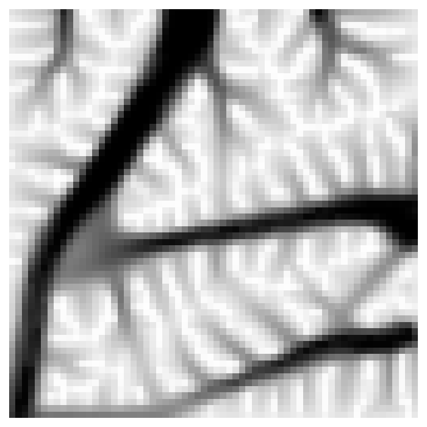

Thermoelastic2D#
{kind=link}
Version |
0 |
Design space |
|
Objectives |
structural_compliance: ↓ thermal_compliance: ↓ volume_fraction: ↓ |
Conditions |
fixed_elements: [[0 0 0 … 0 0 0] [0 0 0 … 0 0 0] [0 0 0 … 0 0 0] … [0 0 0 … 0 0 0] [0 0 0 … 0 0 0] [0 0 0 … 0 0 0]] force_elements_x: [[0 0 0 … 0 0 0] [0 0 0 … 0 0 0] [0 0 0 … 0 0 0] … [0 0 0 … 0 0 0] [0 0 0 … 0 0 0] [0 0 0 … 0 0 0]] force_elements_y: [[0 0 0 … 0 0 0] [0 0 0 … 0 0 0] [0 0 0 … 0 0 0] … [0 0 0 … 0 0 0] [0 0 0 … 0 0 0] [0 0 0 … 0 0 0]] heatsink_elements: [[0 0 0 … 0 0 0] [0 0 0 … 0 0 0] [0 0 0 … 0 0 0] … [0 0 0 … 0 0 0] [0 0 0 … 0 0 0] [0 0 0 … 0 0 0]] volfrac: 0.3 rmin: 1.1 weight: 0.5 |
Dataset |
|
Import |
|
Truss 2D integer optimization problem.
Problem Description#
This is 2D topology optimization problem for minimizing weakly coupled thermo-elastic compliance subject to boundary conditions and a volume fraction constraint.
Design space#
The design space is represented by a 2D tensor of continuous design variables in the range [0, 1] that represent the material density at each voxel in the design space.
Objectives#
The objectives are defined and indexed as follows:
0. structural_compliance: Structural compliance to minimize.
thermal_compliance: Thermal compliance to minimize.volume_fraction: Volume fraction error to minimize.
Boundary Conditions#
Creating a problem formulation requires defining a python dict with the following info:
fixed_elements: Encodes a binary NxN matrix of the structurally fixed elements in the domain.force_elements_x: Encodes a binary NxN matrix specifying elements that have a structural load in the x-direction.force_elements_y: Encodes a binary NxN matrix specifying elements that have a structural load in the y-direction.heatsink_elements: Encodes a binary NxN matrix specifying elements that have a heat sink.volfrac: Encodes the target volume fraction for the volume fraction constraint.rmin: Encodes the filter size used in the optimization routine.weight: Allows one to control which objective is optimized for. 1.0 Is pure structural optimization, while 0.0 is pure thermal optimization.
Dataset#
The dataset linked to this problem is on huggingface Hugging Face Datasets Hub. Relevant datapoint fields include:
optimal_design: An optimized design for the set of boundary conditionsstrain: The strain field for the initial uniform designvm_stress: The von Mises stress field for the initial uniform designfixed_elements: Encodes a binary NxN matrix of the structurally fixed elements in the domain.force_elements_x: Encodes a binary NxN matrix specifying elements that have a structural load in the x-direction.force_elements_y: Encodes a binary NxN matrix specifying elements that have a structural load in the y-direction.heatsink_elements: Encodes a binary NxN matrix specifying elements that have a heat sink.volume_fraction: The volume fraction value of the optimized designstructural_compliance: The structural compliance of the optimized designthermal_compliance: The thermal compliance of the optimized designnelx: The number of elements in the x-directionnely: The number of elements in the y-directionvolfrac: The volume fraction target of the optimized designrmin: The filter size used in the optimization routineweight: The domain weighting used in the optimization routine
The dataset is generated by enumerating different boundary condition components, and taking the cartesian product of these components. The following components are enumerated:
fixed_elements: 2 fixed elements that can lie anywhere on the left or top boundaryforce_elements_x: 1 force element that can lie anywhere on the right boundaryforce_elements_y: 1 force element that can lie anywhere on the bottom boundaryheatsink_elements: N heat sink elements that can lie anywhere on the left or top boundary (N is also enumerated to have different sizes)volfrac: The volume fraction target of the optimized design
Simulator#
The evaluation code models the problem as a weakly coupled thermo-elastic problem. The code is written in pure python, and the evaluation is done in a single process.
Lead#
Gabriel Apaza @gapaza